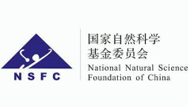

The Advanced Learning & Perception System(先进学习与感知系统，ALPS) Lab was founded by Dr. Xiaobo Chen. The ALPS Lab is dedicated to developing and applying a variety of machine learning/deep learning methods for traffic information sensing and control. Our goal is to advocate green, economic, efficient, safe and comfortable transportation system to achieve smart city by leveraging cutting-edge artificial intelligence and cloud/edge computing techniques.
Professor
Xiaobo Chen, Ph.D., Professor, PhD supervisor, Taishan Scholar
Xiaobo Chen received the B.S. and M.S. degree from Jiangsu University, in 2004 and 2007 respectively, and the Ph.D. degree in pattern recognition and intelligence systems from the Nanjing University of Science and Technology, Nanjing, in 2013.
From Feb. 2011 to Aug. 2011, he was a research assistant at Department of Computing, the Hong Kong Polytechnic University. From 2015 to 2017, he was a postdoctoral researcher in the University of North Carolina at Chapel Hill.
Our research is funded in part from these sources:
Funding
